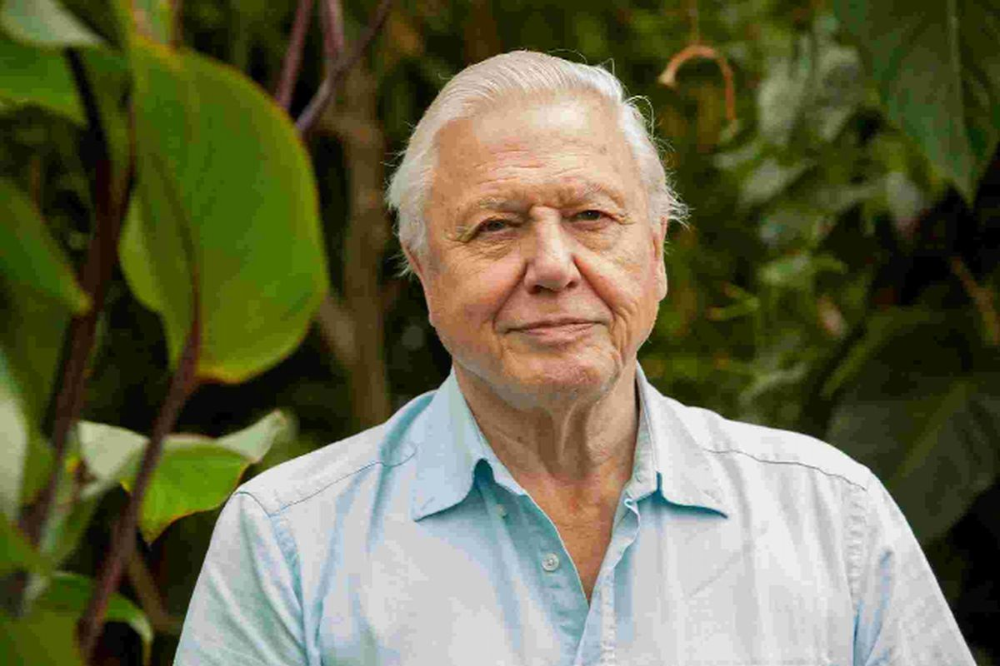
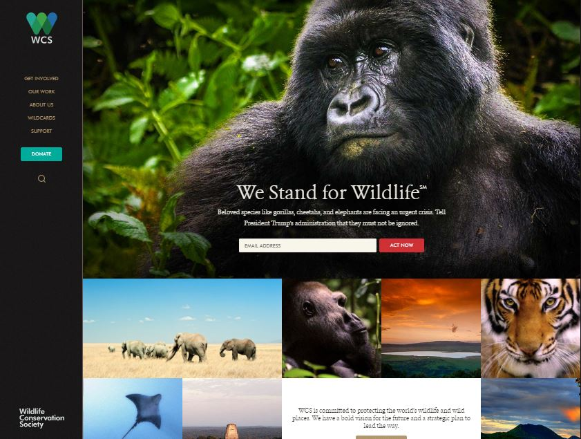
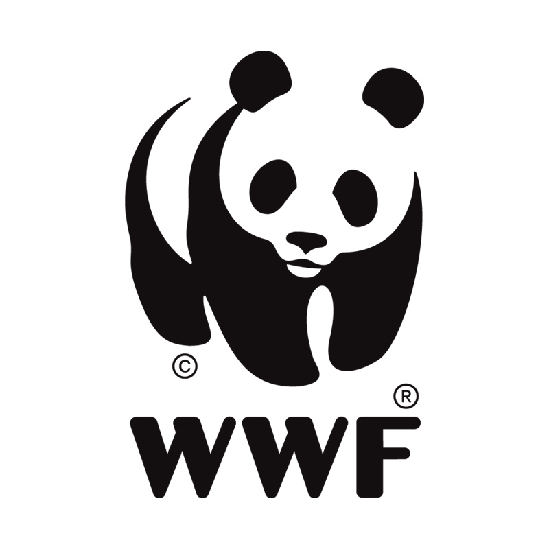

5/3/17
Wildlife Conservation Society
When it comes to important causes and nonprofit organizations, Wildlife Conservation Society has always been at the top of my list. Nature plays so many essential roles in our world. Without it, there wouldn't even be a world. I am also absolutely fascinated with wildlife, and have been observing all creatures that I could find on the ground, in the water, or in the sky with intense interest since I was a little kid. It goes without saying that one of the most influential figures in my life is Sir David Attenborough.
Designing for social causes, for nonprofits, is a very interesting topic for me and I have thought of taking this path in the future, but there very few that I'm really passionate about. Wildlife conservation (not sure if this even counts as a social cause
but I will just go along with it) is one of them. As I look through Wildlife Conservation Society's website, my mind fills with inspiration and ideas. The website is what I would imagine to be a graphic design professor's dream. It is neat, colorful, lively, and easy to navigate through. If I were to use my skills from various school web design projects to make a living, I would want my work to look like this, and to be for this. My conscience would be clear knowing that I'm not trying to get people to buy the latest iPhone, but instead to support an important organization.
I was originally going to write this post on World Wildlife Fund (WWF), with its famous panda logo and equally essential activism, but for me WCS is closer to heart since so many of its programs are located here in NYC. I've visited most of them throughout my life (including New York Aquarium, Central Park Zoo, and Prospect Park Zoo), and would love to work for any of them.